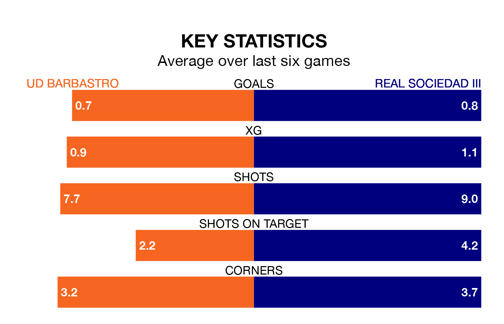

Real Sociedad III travel to UD Barbastro on early Sunday in the Segunda División RFEF Group 2.
The visitors come into the game on the back of a draw in their last match, having tied with Athletic Club B 0-0 at home.
Barbastro, meanwhile, won their last match, 3-0 against Náxara CD, with their goals scored by Marc Prat Serrano and Jaime Reques Vegas.
With 24 goals in 32 games so far this season, Barbastro are scoring at below the league average rate with 0.8 goals per game. But they are conceding fewer than average too, letting in 27 goals at a rate of 0.8 per game.
Sociedad III are also below average scorers, with 1.0 goal per game, compared to a league average of 1.1. They have also conceded 1.0 goal per game.
The home side are in disappointing form in the Segunda División RFEF Group 2, with one win and three draws from their last six games.
With two wins and three draws over that period, the visitors' form is better – they have taken nine points from 18, compared to Barbastro's six.
Sociedad III are seventh in the table after 32 games, of which they have won 11 and drawn 11, earning 44 points.
Barbastro are four places behind Sociedad III in 11th, with nine wins and 14 draws putting them on 41 points.
Updated: 07:59 (UTC), 26/04/24